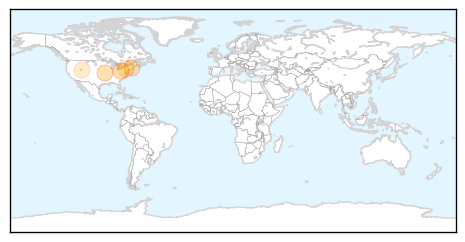
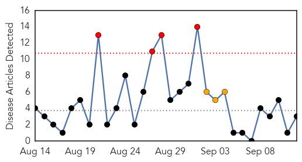
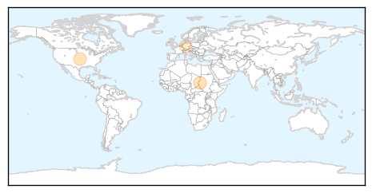
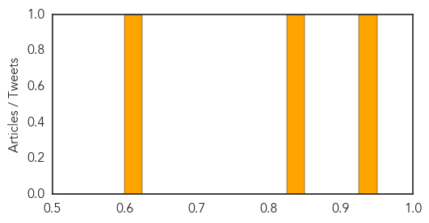

West Nile Virus
30-Day Web Trend
1 alerts, 0 warnings

30-Day Twitter Trend
0 alerts, 0 warnings

Article Locations
Article Confidences
Top Articles:
- 0.987
- First human case this year of West Nile virus reported
- 0.967
- County resident dies from West Nile Virus
- 0.881
- 2nd human case of West Nile confirmed in Massachusetts
- 0.702
- Mosquito spraying set for 5 Luzerne County municipalities on Monday
- 0.613
- Experts offer prevention tips after 3 cases of West Nile Virus reported in Salt Lake County
Top Tweets:
-
No tweets found for Sep 12, 2015
Measles
30-Day Web Trend
4 alerts, 3 warnings

30-Day Twitter Trend
0 alerts, 0 warnings

Article Locations
Article Confidences
Top Articles:
Top Tweets:
-
No tweets found for Sep 12, 2015